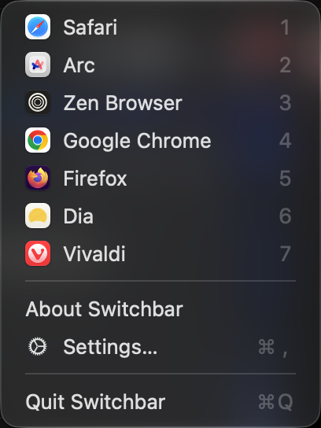
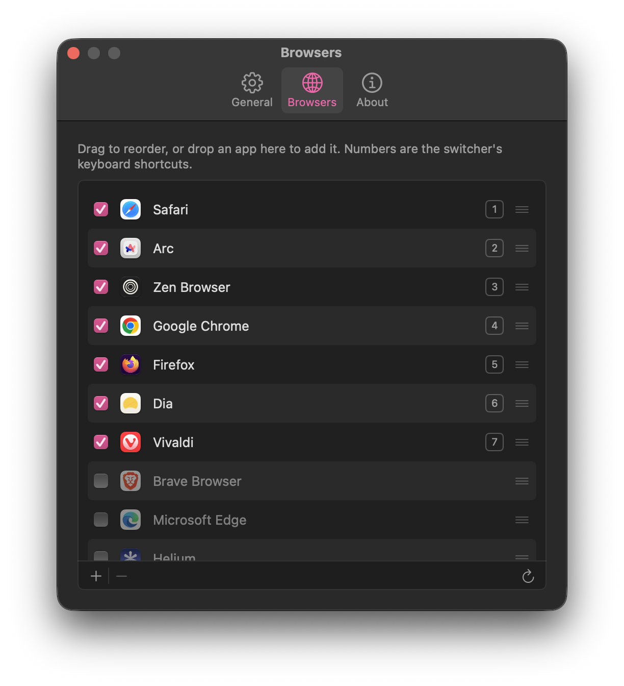
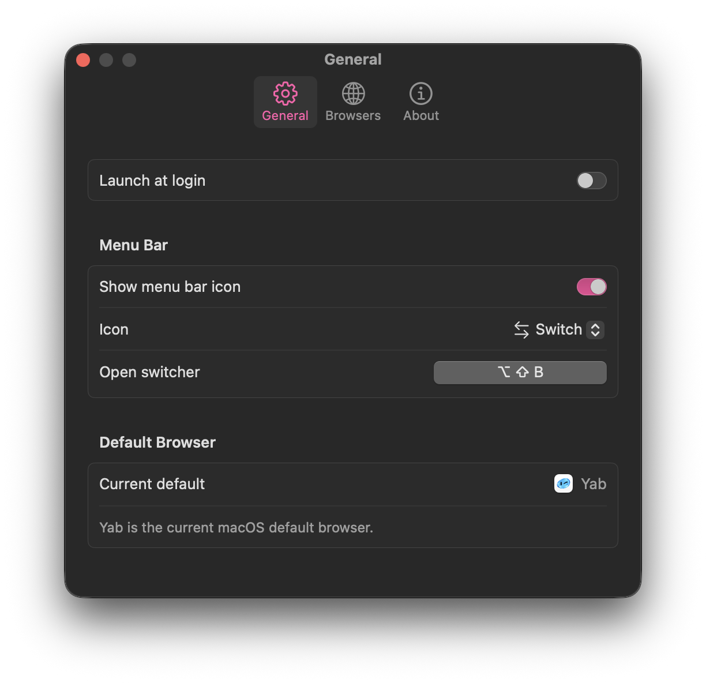
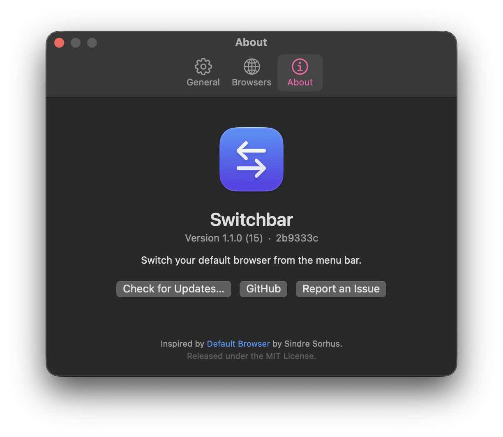

Switchbar lives in your Mac's menu bar and changes the system default browser instantly, so links open where you want them for whatever you're working on.

Features
Switchbar does one thing: it changes your default browser quickly, from wherever you are.
Press ⌥ ⇧ B (or your own shortcut), then a number key. Two keystrokes and you've switched.
Safari, Chrome, Firefox, Arc, Dia, Zen, Vivaldi, Orion web apps and more are detected automatically. Stale copies and cached test builds are skipped.
Changed the default in System Settings, or clicked "Make default" in a browser? Switchbar notices the next time you open it.
Drag to reorder, hide browsers you never switch to, or drop any app from Finder onto the list to add it.
No Dock icon and no windows. You can even hide the menu bar icon and use only the shortcut.
A tiny universal Swift app, signed and notarized by Apple. No tracking and no network access, just one settings file on your Mac.
Screenshots



Every installed browser, in the order you want it.
Just the settings you need.
Version, build and commit, plus quick links to updates, the source code and the issue tracker.
Install
Requires macOS 15 Sequoia or later.
Download the notarized app, unzip it, and move Switchbar.app to Applications. Turn on Launch at login in Settings.
Latest releaseInstall from the tap and start it automatically at login:
$ brew tap Yukaii/tap
$ brew install switchbar
$ brew services start switchbar